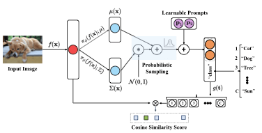
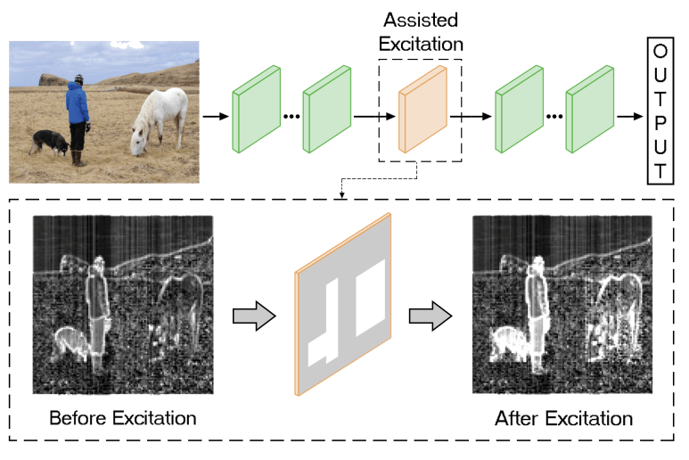

Mohammad Mahdi Derakhshani
Computer Vision | Machine Learning
Hi! I'm Mohammad, a Ph.D. student of VIS lab at the
University of Amsterdam working with Cees
Snoek and Yuki Asano. My
Ph.D.
thesis is Efficient Adaptation of Large-scale Vision and Language Models.
Specifically, my current focus is on the implementation of prompting and chain of thoughts for
multi-modal reasoning.
In summer 2022, I was also a ML/CV intern at Samsung AI Center (SAIC) in Cambridge working with Brais Martinez and Georgios Tzimiropoulos
doing research on Prompting of large-scale language-image models and
Federated Learning.
Previously I was a master student at the University of Tehran working with Babak Nadjar Araabi and Mohammad Amin Sadeghi. I
did my master at machine learning and computational modeling lab working on object detection and
image compression. During my master degree, I also did research on object detection with Mohammad Rastegari at
Allen AI Institute.
I am a member of ELLIS society, and I
have served as reviewer for ICCV'21, ICML'22, CVPR'23, ICLR'23, and TPAMI.

Research
I'm interested in computer vision and multi-modal learning (vision & language models), specifically
the prompting and chain of thoughts for multi-modal reasoning.

Variational prompt tuning improves generalization of vision-language models
Mohammad Mahdi Derakhshani, Enrique Sanchez, Adrian Bulat, Victor Guilherme Turrisi
da Costa, Cees G. M. Snoek, Georgios Tzimiropoulos, Brais Martinez.
arXiv 2022
bibtex
We propose a probabilistic modeling of the underlying distribution of prompts, allowing prompts
within the support of an associated concept to be derived through stochastic sampling. This results
in a more complete and richer transfer of the information captured by the language model, providing
better generalization capabilities for downstream tasks.

LifeLonger: A Benchmark for Continual Disease Classification
Mohammad Mahdi Derakhshani, Ivona Najdenkoska, Tom van Sonsbeek, Xiantong Zhen,
Dwarikanath Mahapatra, Marcel Worring, Cees G. M. Snoek.
MICCAI 2022
bibtex
We introduce LifeLonger, a benchmark for continual disease classification on the MedMNIST
collection, by applying existing state-of-the-art continual learning methods. We perform a thorough
analysis of the performance and examine how the well-known challenges of continual learning, such as
the catastrophic forgetting exhibit themselves in this setting.
Generative Kernel Continual learning
Mohammad Mahdi Derakhshani, Xiantong Zhen, Ling Shao, Cees G. M. Snoek
arXiv 2021
bibtex
We introduce generative kernel continual learning, which explores and exploits the synergies
between generative models and kernels for continual learning.

Kernel Continual learning
Mohammad Mahdi Derakhshani, Xiantong Zhen, Ling Shao, Cees G. M. Snoek
ICML 2021
bibtex
This paper introduces kernel continual learning, a simple but effective variant of continual
learning that leverages the non-parametric nature of kernel methods to tackle catastrophic
forgetting.

Assisted Excitation of Activations: A Learning Technique to Improve Object Detectors
Mohammad Mahdi Derakhshani, Saeed Masoudnia, Amir Hossein Shaker, Omid Mersa,
Mohammad Amin Sadeghi, Mohammad Rastegari, Babak N. Araabi
CVPR 2019
bibtex
We present a simple and effective learning technique that significantly improves mAP of YOLO
object detectors without compromising their speed.

BlockCNN: A Deep Network for Artifact Removal and Image Compression
Danial Maleki, Soheila Nadalian, Mohammad Mahdi Derakhshani, Mohammad Mahdi
Derakhshani, Mohammad Amin Sadeghi
CVPR (Workshop) 2018
bibtex
We present a general technique that performs both artifact removal and image compression. For
artifact removal, we input a JPEG image and try to remove its compression artifacts.